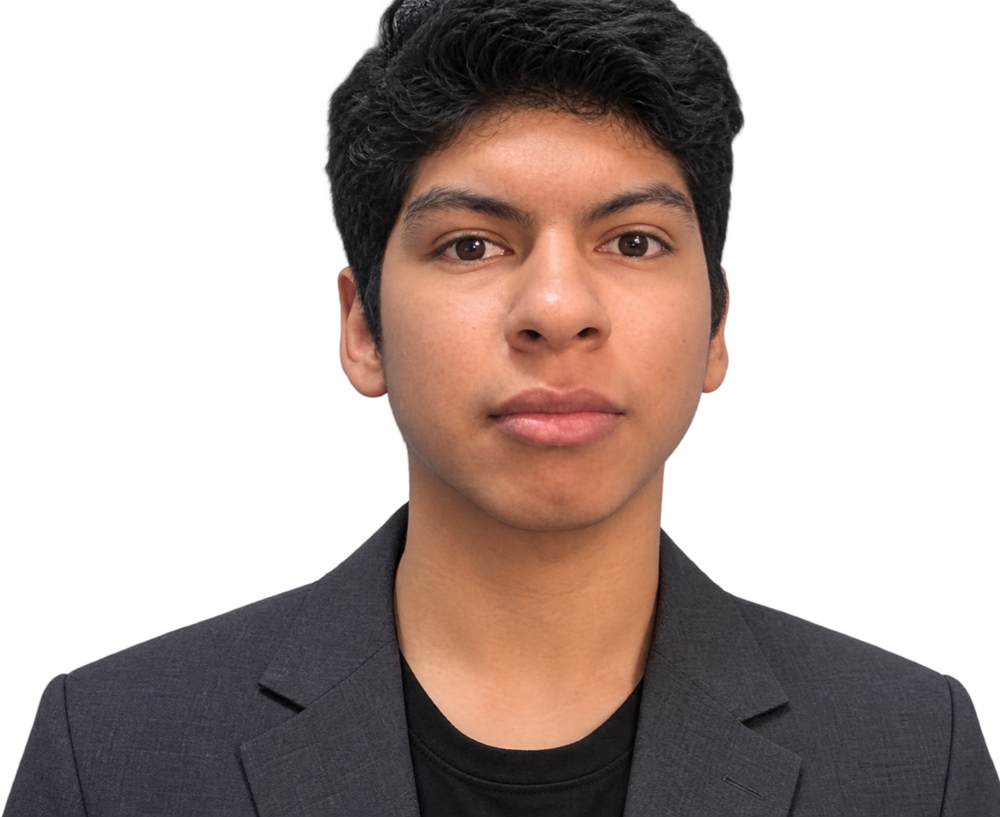

Soporte técnico · Atención al cliente · Apoyo operativo
Perfil polifuncional con sólida experiencia en atención al cliente, mantenimiento técnico y gestión de servicios generales. Estudiante de Ingeniería en Sistemas de Información con alta capacidad para la resolución de problemas, organización operativa, recepción e inspección de mercadería y manejo de herramientas informáticas y ofimáticas. Destaco por mi responsabilidad, proactividad, dinamismo y excelencia en el trato directo con usuarios y clientes.
📍 Durán, Ecuador
📞 095 876 1460
✉️ ad.arriaga20@gmail.com